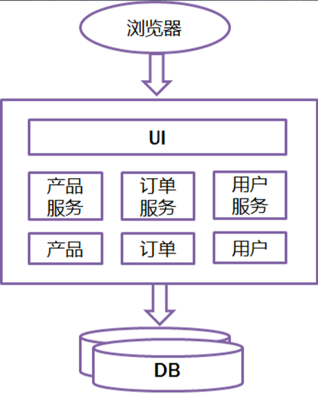
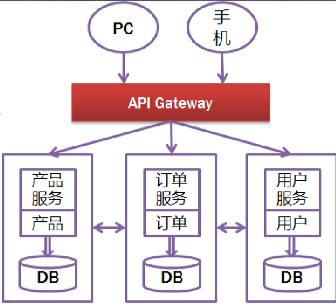
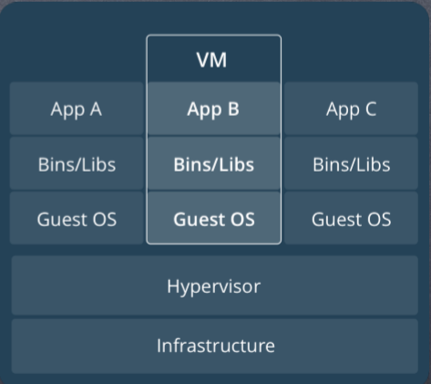
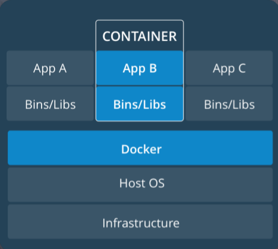
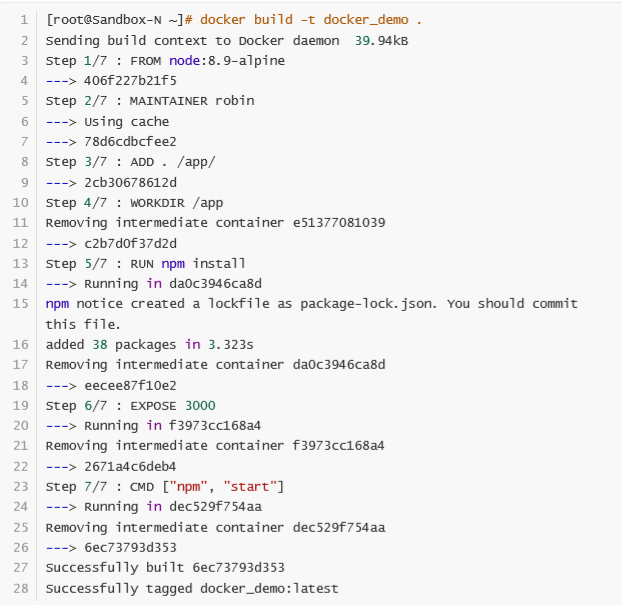
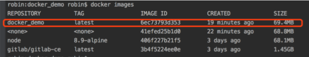
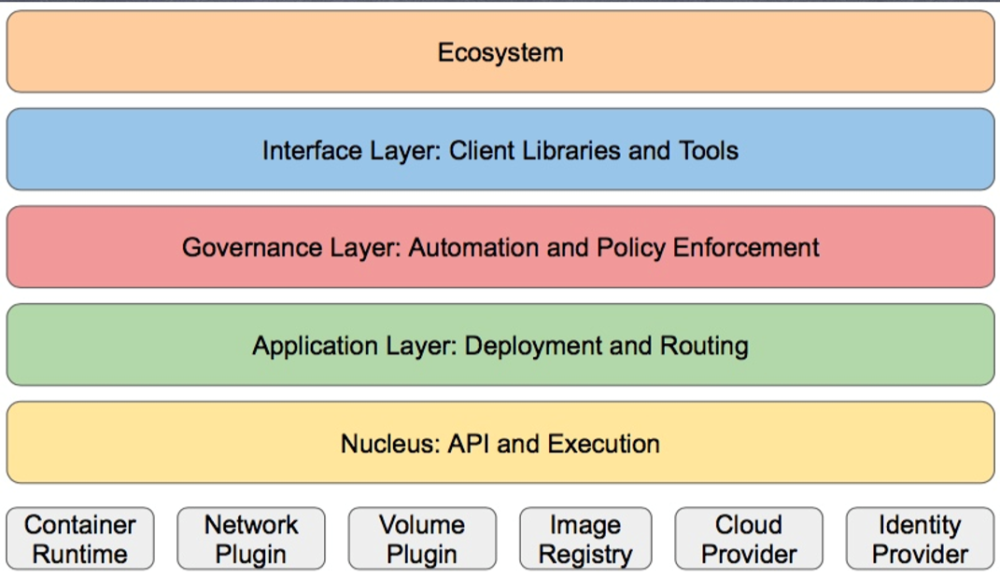
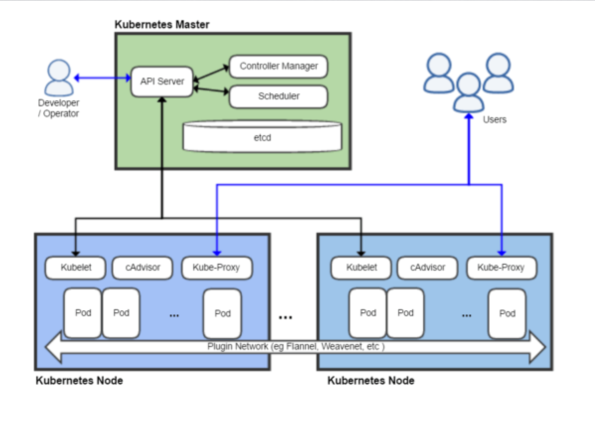

# 微服务入门与Docker实战
# Docker入门与实战
# 微服务的核心思想
# 微服务到底是什么
- 微服务属于架构层面的设计模式
- 微服务的设计概念以业务功能为主
- 微服务独立提供对应的业务功能
- 微服务不拘泥于具体的实现语言
- 微服务架构 ≈ 模块化开发 + 分布式计算
# 总览微服务
旧模式下，所有业务都在一个系统内，连同一个数据库

微服务下，按业务分开，不同的业务对应不同的数据库，把一个大活分开成多个小活

# 微服务的特点
- 小, 且专注于做⼀件事情
- 处于独立的进程中
- 轻量级的通信机制
- 松耦合、独立部署
# 合理使用微服务
- 业务复杂度高
- 团队规模大
- 业务需要长期演进
- 最后——没有银弹
# 微服务——集成与部署
- 持续集成——jekins
- 虚拟化——虚拟机
- 容器——Docker
# Docker vs VM
# Docker简介
Docker是一个开源的引擎，可以轻松的为任何应用创建一个轻量级的、可移植的、 自给自足的容器。开发者在笔记本上编译测试通过的容器可以批量地在生产环境中 部署，包括VMs（虚拟机）、bare metal、OpenStack 集群和其他的基础应用平台。
Docker通常用于如下场景：
- web应用的自动化打包和发布；
- 自动化测试和持续集成、发布；
- 在服务型环境中部署和调整数据库或其他的后台应用；
- 从头编译或者扩展现有的OpenShift或Cloud Foundry平台来搭建自己的PaaS环境。
# Docker vs VM
- VM：
- 运行在宿主机之上的完整的操作系统 运行自身操作系统会占用较多的资源

- Docker：
- Docker更加轻量高效
- 对系统资源的利用率很高
- 比虚拟机技术更为轻便、快捷
- 隔离效果不如VM，如图所示，如果一个应用把系统搞崩了，其他应用也就废废了。

# Docker的相关概念
- Docker是CS架构，主要有两个概念：
- Docker daemon:
- 运行在宿主机上
- Docker守护进程
- 用户通过Docker client(Docker命令)与Docker daemon交互
- Docker client:
- Docker 命令行工具，是用户使用Docker的主要方式
- Docker client与Docker daemon通信并将结果返回给用户
- Docker client也可以通过socket或者RESTful api访问远程的 Docker daemon
# 安装与Hello world
# 实战：打包一个WEB服务器
# 初始化一个nodejs程序
首先创建一个空文件夹，并创建一下文件
- server.js
- package.json
- Dockerfile
- .dockerignore
server.js
const Koa = require('koa'); const app = new Koa();
app.use(async ctx => {
ctx.body = 'Hello docker';
});
app.listen(3232);
1
2
3
4
5
2
3
4
5
.dockerignore
# Logs
logs
*.log
npm-debug.log*
# Runtime data
pids
*.pid
*.seed
# Directory for instrumented libs generated by jscoverage/JSCover
lib-cov
# Coverage directory used by tools like istanbul
coverage
# nyc test coverage
.nyc_output
# Grunt intermediate storage (http://gruntjs.com/creatingplugins#storing-task-files)
.grunt
# node-waf configuration
.lock-wscript
# Compiled binary addons (http://nodejs.org/api/addons.html)
build/Release
# Dependency directories
node_modules
jspm_packages
# Optional npm cache directory
.npm
# Optional REPL history
.node_repl_history
.idea
.node_modules
node_modules
.vscode
1
2
3
4
5
6
7
8
9
10
11
12
13
14
15
16
17
18
19
20
21
22
23
24
25
26
27
28
29
30
31
32
2
3
4
5
6
7
8
9
10
11
12
13
14
15
16
17
18
19
20
21
22
23
24
25
26
27
28
29
30
31
32
文件在放到docker之前先测试好。
# 创建 Dockerfile
# 制定node镜像的版本
FROM node:8.9-alpine
# 声明作者
MAINTAINER evilboy
# 移动当前目录下面的文件到app目录下
ADD . /app/
# 进入到app目录下面，类似cd
WORKDIR /app
# 安装依赖
RUN npm install
# 对外暴露的端口
EXPOSE 3000
# 程序启动脚本
CMD ["npm", "start"]
1
2
3
4
5
6
7
8
9
10
11
12
13
14
2
3
4
5
6
7
8
9
10
11
12
13
14
# 构建镜像

等待镜像构造完成，然后使用 images 命令查看镜像

此时看到images已经构造完成，现在开始启动images并测试
#启动镜像 -d表示后台执行，-p 9000:3000表示制定本地的9000端口隐射到容器内的3000端口，docker_demo是镜像名称
docker run -d -p 9000:3000 docker_demo
#查看容器
docker ps
1
2
3
4
2
3
4
# K8S(Kubernetes)入门
# 什么是K8s
- Kubernetes，因为首尾字母中间有8个字符，所以被简写成 K8s。
- K8s 是底层资源与容器间的一个抽象层，如果和单机架构类比，可以算 作是一个分布式时代的 Linux。
- K8s 是 Google 开源的容器集群管理系统。在 Docker 技术的基础上，为 容器化的应用提供部署运行、资源调度、服务发现和动态伸缩等一系列 完整功能，提高了大规模容器集群管理的便捷性。
# K8S的特点
- k8s是一个管理容器的工具，也是管理应用整个生命周期的一个工具， 从创建应用，应用的部署，应用提供服务，扩容缩容应用，应用更新， 而且可以做到故障自愈。
- 可移植：支持公有云，私有云，混合云；
- 可扩展：模块化，热插拨，可组合；
- 自愈：自动替换，自动重启，自动复制，自动扩展。
# K8S的管理步骤
在k8s进行管理应用的时候，基本步骤是：
- 创建集群
- 部署应用
- 发布应用
- 扩展应用
- 更新应用
# K8S的架构结构
- 生态系统
- 接口层
- 管理层
- 应用层
- 核心层

# 相关概念
- 主机（Master）：用于控制 Kubernetes 节点的计算机。所有任务分配都来自于此。
- 节点（Node）：执行请求和分配任务的计算机。由 Kubernetes 主机负责对节点进行控制。
- 容器集（Pod）：部署在单个节点上的，且包含一个或多个容器的容器组。同一容器集中的所有容器共 享同一个 IP 地址、IPC、主机名称及其它资源。容器集会将网络和存储从底层容器中抽象出来。这样， 您就能更加轻松地在集群中移动容器。
- 复制控制器（Replication controller）： 用于控制应在集群某处运行的完全相同的容器集副本数量。
- 服务（Service）：服务可将工作定义与容器集分离。Kubernetes 服务代理会自动将服务请求分配到正 确的容器集——无论这个容器集会移到集群中的哪个位置，即使它已被替换。
- Kubelet： 这是一个在节点上运行的服务，可读取容器清单，确保指定的容器启动并运行。
- kubectl： Kubernetes 的命令行配置工具。

# 安装K8S
(把防火墙关闭，还有SELinux关闭)
- 在Linux下安装单机版的集群环境
- 以root身份执行以下操作：
- 关闭Linux防火墙
- systemctl stop firewalld
- systemctl disable firewalld
- 安装Kubernetes和依赖组件etcd
- yum install -y etcd kubernetes
- 修改配置
- Docker配置文件/etc/sysconfig/docker, OPTIONS=‘-selinux-enabled=false --insecure-registry gcr.io'
- Kubernetes apiservce配置文件/etc/kubernetes/apiserver, 把--admission-control参数中的ServiceAccount删除
- 按顺序启动所有服务
- systemctl start etcd
- systemctl start docker
- systemctl start kube-apiserver
- systemctl start kube-controller-manager
- systemctl start kube-scheduler
- systemctl start kubelet
- systemctl start kube-proxy
- 关闭Linux防火墙
# K8S相关资源
← 容错 前端性能优化 服务器 →